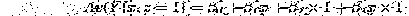
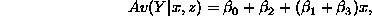
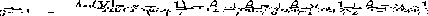
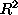

The volatility regime model, in which trades took place at different rates over the course of a day, relied on knowing the key facts that
- The sum of normal random variables is again normal
- The variance of a sum is the sum of the variances when the observations are independent
- The return over a fixed period (say a day) is approximately equal to the sum of returns over contained shorter periods (say hours)
- Example:
Comparing hourly returns and the daily return.
| HOUR | 0 | 1 | 2 | 3 | 4 | 5 | 6 | 7 |
| Value | 100.0000 | 99.4819 | 99.6610 | 100.6495 | 101.5622 | 102.7503 | 100.9752 | 101.2928 |
| Hourly return | *** | -0.0052 | 0.0018 | 0.0099 | 0.0091 | 0.0117 | -0.0173 | 0.0031 |
Daily return = 0.0129.
Sum of hourly returns = 0.0131
The sum of the hourly returns approximates the daily return.
If the hourly returns are approximately normal, then so is their sum, but this is just the daily return. The daily return is a sum, and the variance of a sum is the sum of the variances (provided the returns are independent), so if you buy into the model then daily returns have more variance than the hourly returns.
Todays material: looking at categorical variables.
Interaction terms in categorical variables.
Interaction: a three variable concept. One Y and two X's. X1 and X2.
The impact of X1 on Y depends on the level of X2.
In the gold example; the impact of SP500 return on gold return depends on the date (Pre 1980 vs. Post 1980).
In formulae, denote the categorical variable by z, and let z = 1 for group 1 and z = -1 for group 2. Then for group 1:



and group 2


Hence  is the difference in intercepts and
is the difference in intercepts and  is the
difference in slopes.
is the
difference in slopes.
When doing categorical variable regression always check the residuals for each group.
Comparison boxplots are good for this.
Back to ``broken stick regression''.
What you need to know:
- The basic graphics for simple regression
- The interpretation of the regression coefficients
- The interpretation of the number summaries,  , RMSE.
- Inference: confidence intervals for the slope, p-values
Next time
Start multiple regression. This is chapter 3 in Berndt.We will use this to review transformation, prediction and categorical variables with more than two groups.
Richard Waterman
Wed Sep 10 23:44:00 EDT 1997